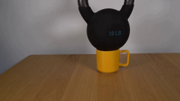
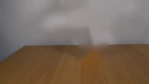
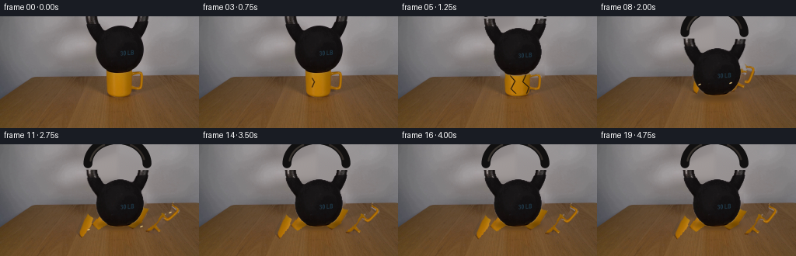
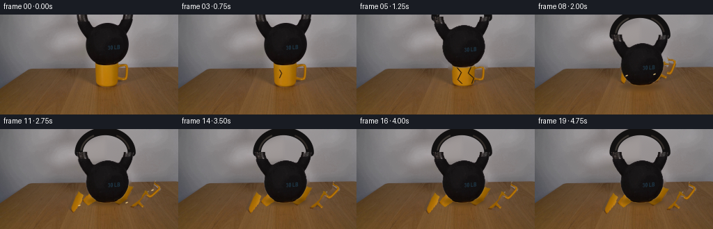

CODING AGENTS AS PIXEL WORLD MODELS
traex/GPT-5.6-Sol · 0188
点击播放 · 原生 RGB 像素
逐轮保存的候选
回放视频、检查图与代码变化。
每份候选均可单独播放。实际图片检查记录在下方工具轨迹中。
候选 01播放与检查图
点击播放 · 原生 RGB 像素

展开代码变化
--- 上一保存版本
+++ 本次保存版本
@@ -0,0 +1,213 @@
+from pathlib import Path
+import math
+import cv2
+import numpy as np
+from PIL import Image
+import artifact_io
+
+ROOT = Path(__file__).resolve().parent
+W, H = 256, 144
+
+
+def soften(mask, sigma=0.65):
+ return cv2.GaussianBlur(mask.astype(np.float32), (0, 0), sigma)
+
+
+def alpha_over(dst, src, alpha):
+ a = np.clip(alpha[..., None], 0.0, 1.0)
+ return np.clip(src.astype(np.float32) * a + dst.astype(np.float32) * (1-a), 0, 255).astype(np.uint8)
+
+
+def warp_layer(rgb, alpha, M, interp=cv2.INTER_CUBIC):
+ rr = cv2.warpAffine(rgb, M, (W, H), flags=interp, borderMode=cv2.BORDER_CONSTANT, borderValue=(0,0,0))
+ aa = cv2.warpAffine(alpha, M, (W, H), flags=cv2.INTER_LINEAR, borderMode=cv2.BORDER_CONSTANT, borderValue=0)
+ return rr, aa
+
+
+def rotate_about(x, y, angle_deg, dx=0, dy=0):
+ M = cv2.getRotationMatrix2D((x, y), angle_deg, 1.0)
+ M[:, 2] += (dx, dy)
+ return M
+
+
+def draw_extended_handle(frame, yoff, angle=0.0):
+ """Reconstruct the small part of the iron handle initially above the crop."""
+ S = 4
+ lay = np.zeros((H*S, W*S, 3), np.uint8)
+ alp = np.zeros((H*S, W*S), np.uint8)
+ # Elliptical heavy iron hoop, behind the extracted original pixels.
+ center = (151*S, int((-8+yoff)*S))
+ axes = (38*S, 31*S)
+ cv2.ellipse(alp, center, axes, angle, 180, 360, 255, 11*S, cv2.LINE_AA)
+ cv2.ellipse(lay, center, axes, angle, 180, 360, (17,16,16), 11*S, cv2.LINE_AA)
+ # soft highlight along left lip and a tiny warm reflection at far right
+ cv2.ellipse(lay, center, (35*S,28*S), angle, 188, 241, (57,52,47), 2*S, cv2.LINE_AA)
+ cv2.ellipse(lay, center, (35*S,28*S), angle, 299, 348, (48,42,38), 2*S, cv2.LINE_AA)
+ lay = cv2.resize(lay, (W,H), interpolation=cv2.INTER_AREA)
+ alp = cv2.resize(alp, (W,H), interpolation=cv2.INTER_AREA).astype(np.float32)/255
+ return alpha_over(frame, lay, alp)
+
+
+def make_plate(src):
+ # Mask all foreground apparatus and its old contact shadow, then use a
+ # structure-aware inpaint. The locked background's low contrast makes this
+ # produce a clean wall/table continuation while preserving the horizon.
+ mask = np.zeros((H,W), np.uint8)
+ cv2.ellipse(mask, (151,46), (37,31), 0, 0, 360, 255, -1)
+ cv2.rectangle(mask, (107,0), (195,35), 255, -1)
+ cv2.rectangle(mask, (131,63), (188,107), 255, -1)
+ cv2.ellipse(mask, (154,104), (34,7), 0, 0, 360, 255, -1)
+ plate = cv2.inpaint(src, mask, 7, cv2.INPAINT_TELEA)
+ # Retain the exact original table edge outside the occluded central span.
+ return plate
+
+
+def make_assets(src):
+ b,g,r = cv2.split(src)
+ lum = cv2.cvtColor(src, cv2.COLOR_RGB2GRAY)
+ # Kettlebell: dark connected silhouette in the upper central ROI.
+ km = np.zeros((H,W), np.uint8)
+ roi = np.zeros_like(km); roi[0:74,105:198] = 255
+ km[(lum < 78) & (roi > 0)] = 255
+ # Remove isolated wall noise and preserve anti-aliased silhouette via dilation.
+ n, lab, stats, _ = cv2.connectedComponentsWithStats(km, 8)
+ keep = np.zeros_like(km)
+ for i in range(1,n):
+ if stats[i, cv2.CC_STAT_AREA] > 30:
+ keep[lab == i] = 255
+ ka = soften(keep, .55)/255.0
+
+ # Yellow/orange glaze. HSV saturation cleanly separates it from wall/wood.
+ hsv = cv2.cvtColor(src, cv2.COLOR_RGB2HSV)
+ mm = np.zeros((H,W), np.uint8)
+ cond = (hsv[:,:,0] > 8) & (hsv[:,:,0] < 34) & (hsv[:,:,1] > 105) & (src[:,:,0] > 92)
+ mm[cond & (np.indices((H,W))[0] >= 63) & (np.indices((H,W))[0] < 107) &
+ (np.indices((H,W))[1] >= 130) & (np.indices((H,W))[1] < 189)] = 255
+ # close tiny highlight holes but don't fill handle interior
+ mm = cv2.morphologyEx(mm, cv2.MORPH_CLOSE, np.ones((2,2),np.uint8))
+ ma = soften(mm, .55)/255.0
+ return src.copy(), ka, src.copy(), ma
+
+
+def shard_mask(poly):
+ m=np.zeros((H,W),np.uint8)
+ cv2.fillPoly(m,[np.array(poly,np.int32)],255)
+ return (m.astype(np.float32)/255.0)
+
+
+def transform_fragment(rgb, base_alpha, poly, angle, dx, dy, pivot):
+ a = base_alpha * shard_mask(poly)
+ M = rotate_about(pivot[0], pivot[1], angle, dx, dy)
+ return warp_layer(rgb, a, M)
+
+
+def add_shadow(frame, center, axes, strength):
+ sh=np.zeros((H,W),np.float32)
+ cv2.ellipse(sh,(int(center[0]),int(center[1])),(int(axes[0]),int(axes[1])),0,0,360,float(strength),-1,cv2.LINE_AA)
+ sh=cv2.GaussianBlur(sh,(0,0),3.0)
+ out=frame.astype(np.float32)*(1-sh[...,None])
+ return np.clip(out,0,255).astype(np.uint8)
+
+
+def render():
+ src=np.array(Image.open(ROOT/'first_frame.png').convert('RGB'))
+ plate=make_plate(src)
+ krgb,ka,mrgb,ma=make_assets(src)
+ frames=[]
+
+ # Partitions follow actual visible glaze, so copied photographic texture and
+ # highlights remain on every ceramic piece.
+ pieces=[
+ ([(134,66),(145,67),(147,84),(143,102),(134,99)], (140,85), -6.2, -5.0, -4.8, -15),
+ ([(144,66),(157,67),(158,85),(152,102),(142,102)], (150,84), -2.8, -6.6, -7.8, 20),
+ ([(156,66),(169,66),(170,89),(163,103),(152,102)], (161,85), 3.2, -7.3, -5.5, -20),
+ ([(166,69),(176,70),(177,98),(163,103),(168,86)], (170,86), 6.6, -5.4, -7.3, 28),
+ ([(169,70),(184,69),(185,93),(176,96),(175,79)], (177,82), 8.5, -7.5, -8.8, 42),
+ ]
+
+ for fi in range(20):
+ # Initial hold establishes the physically implausible load. Exact source
+ # duplication also guarantees frame zero identity.
+ if fi <= 3:
+ frame=src.copy()
+ # From frame 3 a barely visible stress line announces failure.
+ if fi==3:
+ cv2.line(frame,(145,79),(148,84),(60,39,12),1,cv2.LINE_AA)
+ cv2.line(frame,(148,84),(145,91),(55,34,10),1,cv2.LINE_AA)
+ frames.append(frame)
+ continue
+
+ frame=plate.copy()
+ if fi==4:
+ # apparatus remains seated, but branching hairline cracks spread.
+ frame=alpha_over(frame,mrgb,ma)
+ frame=draw_extended_handle(frame,0)
+ frame=alpha_over(frame,krgb,ka)
+ for pts in [[(145,75),(149,82),(146,89),(150,97)],
+ [(149,82),(155,86),(158,93)],
+ [(166,76),(163,84),(168,90),(166,98)]]:
+ cv2.polylines(frame,[np.array(pts,np.int32)],False,(52,32,10),1,cv2.LINE_AA)
+ elif fi==5:
+ # first compression: the cup shortens as the bell starts downward.
+ Mmu=np.array([[1,0,0],[0,.88,11.5]],np.float32)
+ rr,aa=warp_layer(mrgb,ma,Mmu)
+ frame=alpha_over(frame,rr,aa)
+ for pts in [[(144,76),(150,83),(145,93),(151,99)],[(164,75),(160,84),(168,91),(165,99)]]:
+ cv2.polylines(frame,[np.array(pts,np.int32)],False,(45,28,9),1,cv2.LINE_AA)
+ yoff=3
+ frame=draw_extended_handle(frame,yoff)
+ rr,aa=warp_layer(krgb,ka,np.array([[1,0,0],[0,1,yoff]],np.float32))
+ frame=alpha_over(frame,rr,aa)
+ else:
+ t=fi-6
+ # fragment flight, followed by skittering and rapid frictional rest.
+ for poly,piv,vx,vy,spin,sgn in pieces:
+ tt=min(t,5.0)
+ dx=vx*tt
+ dy=vy*tt+1.72*tt*tt
+ if t>5:
+ dx += vx*.16*(1-math.exp(-(t-5)/1.4))
+ dy += min((t-5)*.35,2.0)
+ angle=spin*min(t,5)+sgn*.03*max(t-5,0)
+ rr,aa=transform_fragment(mrgb,ma,poly,angle,dx,dy,piv)
+ frame=alpha_over(frame,rr,aa)
+
+ # Small sharp chips and a restrained puff of pale ceramic dust.
+ if t<=4:
+ dust=np.zeros((H,W),np.float32)
+ for j in range(12):
+ ang=(-2.75 + j*.48)
+ rad=(t+1)*(4+(j%4)*1.6)
+ x=int(155+math.cos(ang)*rad); y=int(91+math.sin(ang)*rad+1.2*t*t)
+ if 0<=x<W and 0<=y<H:
+ cv2.circle(dust,(x,y),1,0.12*(1-t/5),-1,cv2.LINE_AA)
+ haze=cv2.GaussianBlur(dust,(0,0),2.1)
+ frame=np.clip(frame.astype(np.float32)*(1-haze[...,None])+np.array([206,188,151])*haze[...,None],0,255).astype(np.uint8)
+
+ # Bell free fall then one low, damped impact bounce.
+ yseq={6:10,7:21,8:29,9:33,10:31,11:33,12:32,13:33}
+ yoff=yseq.get(fi,33)
+ if fi>=8:
+ frame=add_shadow(frame,(153,103),(31,5),.31 if fi>=9 else .2)
+ # minute rocking at impact, gone by the final second
+ aseq={8:-0.5,9:0.0,10:0.8,11:-0.35,12:0.18,13:-0.08}
+ angle=aseq.get(fi,0.0)
+ frame=draw_extended_handle(frame,yoff,angle)
+ M=rotate_about(151,72,angle,0,yoff)
+ rr,aa=warp_layer(krgb,ka,M)
+ frame=alpha_over(frame,rr,aa)
+
+ # Exposed white fracture edges on a few larger shards.
+ if 1<=t<=6:
+ edges=[(int(145-6.2*t),int(91-4.8*t+1.72*t*t)),
+ (int(166+3.2*t),int(91-5.5*t+1.72*t*t)),
+ (int(177+8.5*t),int(89-8.8*t+1.72*t*t))]
+ for x,y in edges:
+ if 1<x<W-1 and 79<y<H-1:
+ cv2.line(frame,(x-2,y),(x+1,y-1),(238,205,133),1,cv2.LINE_AA)
+ frames.append(frame)
+ frames[0]=src # explicit contract guard
+ return np.stack(frames).astype(np.uint8)
+
+if __name__=='__main__':
+ artifact_io.save(render(), ROOT)
候选 02播放与检查图
点击播放 · 原生 RGB 像素

展开代码变化
--- 上一保存版本
+++ 本次保存版本
@@ -36,7 +36,10 @@
lay = np.zeros((H*S, W*S, 3), np.uint8)
alp = np.zeros((H*S, W*S), np.uint8)
# Elliptical heavy iron hoop, behind the extracted original pixels.
- center = (151*S, int((-8+yoff)*S))
+ # The source shows the two hoop stems entering through the top border.
+ # Put the ellipse's endpoints on that translated border so the newly
+ # revealed arch joins those photographed stems without a floating gap.
+ center = (151*S, int((1+yoff)*S))
axes = (38*S, 31*S)
cv2.ellipse(alp, center, axes, angle, 180, 360, 255, 11*S, cv2.LINE_AA)
cv2.ellipse(lay, center, axes, angle, 180, 360, (17,16,16), 11*S, cv2.LINE_AA)
候选 03播放与检查图

可观测工具轨迹
实际执行的命令与返回图片。
命令 1exit 0
/bin/bash -lc "cat GENERATION_RULES.md && printf '\\n---PROMPT---\\n' && cat prompt.txt"
命令 2exit 0
/bin/bash -lc "find . -maxdepth 2 -type f -printf '%p\\n' | sort"
命令 3exit 0
/bin/bash -lc "sed -n '1,240p' artifact_io.py && python - <<'PY'
from PIL import Image
im=Image.open('first_frame.png')
print(im.mode, im.size)
PY"命令 4exit 0
/bin/bash -lc "python - <<'PY'
try:
import cv2; print('cv2',cv2.__version__)
except Exception as e: print(e)
PY"命令 5exit 2
/bin/bash -lc "cat > /tmp/test_plate.py <<'PY'
import cv2, numpy as np
from PIL import Image
im=cv2.imread('first_frame.png')
h,w=im.shape[:2]
mask=np.zeros((h,w),np.uint8)
# object broad
cv2.ellipse(mask,(151,47),(33,29),0,0,360,255,-1)
cv2.rectangle(mask,(107,0),(195,33),255,-1)
# mug and handle
cv2.rectangle(mask,(133,65),(187,107),255,-1)
# shadow immediate
cv2.ellipse(mask,(154,103),(30,5),0,0,360,255,-1)
plate=cv2.inpaint(im,mask,7,cv2.INPAINT_TELEA)
cv2.imwrite('.tmp/plate.png',plate)
PY
python /tmp/test_plate.py"命令 6exit 0
/bin/bash -lc "cat > .tmp/test_plate.py <<'PY'
import cv2, numpy as np
im=cv2.imread('first_frame.png'); h,w=im.shape[:2]
mask=np.zeros((h,w),np.uint8)
cv2.ellipse(mask,(151,47),(35,30),0,0,360,255,-1)
cv2.rectangle(mask,(108,0),(194,35),255,-1)
cv2.rectangle(mask,(133,63),(187,108),255,-1)
cv2.ellipse(mask,(154,103),(31,6),0,0,360,255,-1)
plate=cv2.inpaint(im,mask,7,cv2.INPAINT_TELEA)
cv2.imwrite('.tmp/plate.png',plate)
PY
python .tmp/test_plate.py"命令 7exit 0
/bin/bash -lc "cat > generate.py <<'PY'
from pathlib import Path
import math
import cv2
import numpy as np
from PIL import Image
import artifact_io
ROOT = Path(__file__).resolve().parent
W, H = 256, 144
def soften(mask, sigma=0.65):
return cv2.GaussianBlur(mask.astype(np.float32), (0, 0), sigma)
def alpha_over(dst, src, alpha):
a = np.clip(alpha[..., None], 0.0, 1.0)
return np.clip(src.astype(np.float32) * a + dst.astype(np.float32) * (1-a), 0, 255).astype(np.uint8)
def warp_layer(rgb, alpha, M, interp=cv2.INTER_CUBIC):
rr = cv2.warpAffine(rgb, M, (W, H), flags=interp, borderMode=cv2.BORDER_CONSTANT, borderValue=(0,0,0))
aa = cv2.warpAffine(alpha, M, (W, H), flags=cv2.INTER_LINEAR, borderMode=cv2.BORDER_CONSTANT, borderValue=0)
return rr, aa
def rotate_about(x, y, angle_deg, dx=0, dy=0):
M = cv2.getRotationMatrix2D((x, y), angle_deg, 1.0)
M[:, 2] += (dx, dy)
return M
def draw_extended_handle(frame, yoff, angle=0.0):
\"\"\"Reconstruct the small part of the iron handle initially above the crop.\"\"\"
S = 4
lay = np.zeros((H*S, W*S, 3), np.uint8)
alp = np.zeros((H*S, W*S), np.uint8)
# Elliptical heavy iron hoop, behind the extracted original pixels.
center = (151*S, int((-8+yoff)*S))
axes = (38*S, 31*S)
cv2.ellipse(alp, center, axes, angle, 180, 360, 255, 11*S, cv2.LINE_AA)
cv2.ellipse(lay, center, axes, angle, 180, 360, (17,16,16), 11*S, cv2.LINE_AA)
# soft highlight along left lip and a tiny warm reflection at far right
cv2.ellipse(lay, center, (35*S,28*S), angle, 188, 241, (57,52,47), 2*S, cv2.LINE_AA)
cv2.ellipse(lay, center, (35*S,28*S), angle, 299, 348, (48,42,38), 2*S, cv2.LINE_AA)
lay = cv2.resize(lay, (W,H), interpolation=cv2.INTER_AREA)
alp = cv2.resize(alp, (W,H), interpolation=cv2.INTER_AREA).astype(np.float32)/255
return alpha_over(frame, lay, alp)
def make_plate(src):
# Mask all foreground apparatus and its old contact shadow, then use a
# structure-aware inpaint. The locked background's low contrast makes this
# produce a clean wall/table continuation while preserving the horizon.
mask = np.zeros((H,W), np.uint8)
cv2.ellipse(mask, (151,46), (37,31), 0, 0, 360, 255, -1)
cv2.rectangle(mask, (107,0), (195,35), 255, -1)
cv2.rectangle(mask, (131,63), (188,107), 255, -1)
cv2.ellipse(mask, (154,104), (34,7), 0, 0, 360, 255, -1)
plate = cv2.inpaint(src, mask, 7, cv2.INPAINT_TELEA)
# Retain the exact original table edge outside the occluded central span.
return plate
def make_assets(src):
b,g,r = cv2.split(src)
lum = cv2.cvtColor(src, cv2.COLOR_RGB2GRAY)
# Kettlebell: dark connected silhouette in the upper central ROI.
km = np.zeros((H,W), np.uint8)
roi = np.zeros_like(km); roi[0:74,105:198] = 255
km[(lum < 78) & (roi > 0)] = 255
# Remove isolated wall noise and preserve anti-aliased silhouette via dilation.
n, lab, stats, _ = cv2.connectedComponentsWithStats(km, 8)
keep = np.zeros_like(km)
for i in range(1,n):
if stats[i, cv2.CC_STAT_AREA] > 30:
keep[lab == i] = 255
ka = soften(keep, .55)/255.0
# Yellow/orange glaze. HSV saturation cleanly separates it from wall/wood.
hsv = cv2.cvtColor(src, cv2.COLOR_RGB2HSV)
mm = np.zeros((H,W), np.uint8)
cond = (hsv[:,:,0] > 8) & (hsv[:,:,0] < 34) & (hsv[:,:,1] > 105) & (src[:,:,0] > 92)
mm[cond & (np.indices((H,W))[0] >= 63) & (np.indices((H,W))[0] < 107) &
(np.indices((H,W))[1] >= 130) & (np.indices((H,W))[1] < 189)] = 255
# close tiny highlight holes but don't fill handle interior
mm = cv2.morphologyEx(mm, cv2.MORPH_CLOSE, np.ones((2,2),np.uint8))
ma = soften(mm, .55)/255.0
return src.copy(), ka, src.copy(), ma
def shard_mask(poly):
m=np.zeros((H,W),np.uint8)
cv2.fillPoly(m,[np.array(poly,np.int32)],255)
return (m.astype(np.float32)/255.0)
def transform_fragment(rgb, base_alpha, poly, angle, dx, dy, pivot):
a = base_alpha * shard_mask(poly)
M = rotate_about(pivot[0], pivot[1], angle, dx, dy)
return warp_layer(rgb, a, M)
def add_shadow(frame, center, axes, strength):
sh=np.zeros((H,W),np.float32)
cv2.ellipse(sh,(int(center[0]),int(center[1])),(int(axes[0]),int(axes[1])),0,0,360,float(strength),-1,cv2.LINE_AA)
sh=cv2.GaussianBlur(sh,(0,0),3.0)
out=frame.astype(np.float32)*(1-sh[...,None])
return np.clip(out,0,255).astype(np.uint8)
def render():
src=np.array(Image.open(ROOT/'first_frame.png').convert('RGB'))
plate=make_plate(src)
krgb,ka,mrgb,ma=make_assets(src)
frames=[]
# Partitions follow actual visible glaze, so copied photographic texture and
# highlights remain on every ceramic piece.
pieces=[
([(134,66),(145,67),(147,84),(143,102),(134,99)], (140,85), -6.2, -5.0, -4.8, -15),
([(144,66),(157,67),(158,85),(152,102),(142,102)], (150,84), -2.8, -6.6, -7.8, 20),
([(156,66),(169,66),(170,89),(163,103),(152,102)], (161,85), 3.2, -7.3, -5.5, -20),
([(166,69),(176,70),(177,98),(163,103),(168,86)], (170,86), 6.6, -5.4, -7.3, 28),
([(169,70),(184,69),(185,93),(176,96),(175,79)], (177,82), 8.5, -7.5, -8.8, 42),
]
for fi in range(20):
# Initial hold establishes the physically implausible load. Exact source
# duplication also guarantees frame zero identity.
if fi <= 3:
frame=src.copy()
# From frame 3 a barely visible stress line announces failure.
if fi==3:
cv2.line(frame,(145,79),(148,84),(60,39,12),1,cv2.LINE_AA)
cv2.line(frame,(148,84),(145,91),(55,34,10),1,cv2.LINE_AA)
frames.append(frame)
continue
frame=plate.copy()
if fi==4:
# apparatus remains seated, but branching hairline cracks spread.
frame=alpha_over(frame,mrgb,ma)
frame=draw_extended_handle(frame,0)
frame=alpha_over(frame,krgb,ka)
for pts in [[(145,75),(149,82),(146,89),(150,97)],
[(149,82),(155,86),(158,93)],
[(166,76),(163,84),(168,90),(166,98)]]:
cv2.polylines(frame,[np.array(pts,np.int32)],False,(52,32,10),1,cv2.LINE_AA)
elif fi==5:
# first compression: the cup shortens as the bell starts downward.
Mmu=np.array([[1,0,0],[0,.88,11.5]],np.float32)
rr,aa=warp_layer(mrgb,ma,Mmu)
frame=alpha_over(frame,rr,aa)
for pts in [[(144,76),(150,83),(145,93),(151,99)],[(164,75),(160,84),(168,91),(165,99)]]:
cv2.polylines(frame,[np.array(pts,np.int32)],False,(45,28,9),1,cv2.LINE_AA)
yoff=3
frame=draw_extended_handle(frame,yoff)
rr,aa=warp_layer(krgb,ka,np.array([[1,0,0],[0,1,yoff]],np.float32))
frame=alpha_over(frame,rr,aa)
else:
t=fi-6
# fragment flight, followed by skittering and rapid frictional rest.
for poly,piv,vx,vy,spin,sgn in pieces:
tt=min(t,5.0)
dx=vx*tt
dy=vy*tt+1.72*tt*tt
if t>5:
dx += vx*.16*(1-math.exp(-(t-5)/1.4))
dy += min((t-5)*.35,2.0)
angle=spin*min(t,5)+sgn*.03*max(t-5,0)
rr,aa=transform_fragment(mrgb,ma,poly,angle,dx,dy,piv)
frame=alpha_over(frame,rr,aa)
# Small sharp chips and a restrained puff of pale ceramic dust.
if t<=4:
dust=np.zeros((H,W),np.float32)
for j in range(12):
ang=(-2.75 + j*.48)
rad=(t+1)*(4+(j%4)*1.6)
x=int(155+math.cos(ang)*rad); y=int(91+math.sin(ang)*rad+1.2*t*t)
if 0<=x<W and 0<=y<H:
cv2.circle(dust,(x,y),1,0.12*(1-t/5),-1,cv2.LINE_AA)
haze=cv2.GaussianBlur(dust,(0,0),2.1)
frame=np.clip(frame.astype(np.float32)*(1-haze[...,None])+np.array([206,188,151])*haze[...,None],0,255).astype(np.uint8)
# Bell free fall then one low, damped impact bounce.
yseq={6:10,7:21,8:29,9:33,10:31,11:33,12:32,13:33}
yoff=yseq.get(fi,33)
if fi>=8:
frame=add_shadow(frame,(153,103),(31,5),.31 if fi>=9 else .2)
# minute rocking at impact, gone by the final second
aseq={8:-0.5,9:0.0,10:0.8,11:-0.35,12:0.18,13:-0.08}
angle=aseq.get(fi,0.0)
frame=draw_extended_handle(frame,yoff,angle)
M=rotate_about(151,72,angle,0,yoff)
rr,aa=warp_layer(krgb,ka,M)
frame=alpha_over(frame,rr,aa)
# Exposed white fracture edges on a few larger shards.
if 1<=t<=6:
edges=[(int(145-6.2*t),int(91-4.8*t+1.72*t*t)),
(int(166+3.2*t),int(91-5.5*t+1.72*t*t)),
(int(177+8.5*t),int(89-8.8*t+1.72*t*t))]
for x,y in edges:
if 1<x<W-1 and 79<y<H-1:
cv2.line(frame,(x-2,y),(x+1,y-1),(238,205,133),1,cv2.LINE_AA)
frames.append(frame)
frames[0]=src # explicit contract guard
return np.stack(frames).astype(np.uint8)
if __name__=='__main__':
artifact_io.save(render(), ROOT)
PY
python generate.py"命令 8exit 0
/bin/bash -lc "python generate.py && python - <<'PY'
import numpy as np
from PIL import Image
z=np.load('pixels.npz')['pixels']
f=np.array(Image.open('first_frame.png'))
p=(f[:,:,0].astype(np.uint32)<<16)|(f[:,:,1].astype(np.uint32)<<8)|f[:,:,2]
print('tensor',z.shape,z.dtype,'frame0 identical',np.array_equal(z[:,:,0],p))
PY"视觉工具实际返回图片 1

视觉工具实际返回图片 2

视觉工具实际返回图片 3

视觉工具实际返回图片 4

保存候选 3 份；完成命令 8 次；可验证图片返回 4 张。原始 API 响应与完整日志保留在本地。